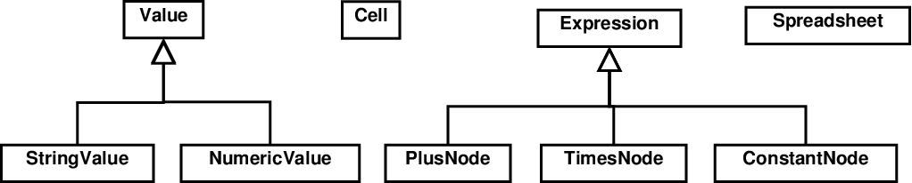
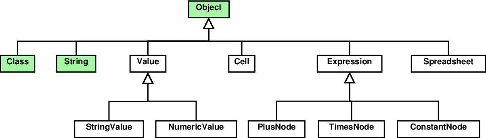

Inheritance in Java
Steven Zeil
1 Class Inheritance
Inheritance among classes in Java works almost identically to C++. The only difference is a rather minor change in syntax. Instead of this C++ syntax, for example,
class NumericValue: public Value {
Java uses the reserved word extends to indicate the same thing:
class NumericValue extends Value {
What is different in Java is not how we do inheritance, but how often.
In Java, if we do not explicitly inherit from another class, then our class will implicitly inherit from java.lang.Object
In C++, if we declare a new class and do not explicitly inherit from another, our new class has no base class. But in Java, if we do not explicitly inherit from another class, then our class will implicitly inherit from a class named Object, more specifically, java.lang.Object.
This is not an empty piece of language design theory. As we will see shortly, there are very real functions declared by Object that we inherit and may want to use. In fact, we have seen some of them (e.g., equals, clone, and toString) in our earlier checklist. One reason I was able to assert that these members represent a consensus among Java programmers is simply because they are encoded into the Object.
Keep in mind that, even if we do explicitly inherit from some other base class, that base class will either inherit from Object or from some other class that either inherits from Object or … Eventually, we will be inheriting from Object, so the members declared there will be inherited by every class.
1.1 Shrubs and Trees
Inheritance in C++
This special Object class contributes to a difference in style between C++ and Java.
C++ programs use inheritance only rarely and when there is an obvious need for it.
Spreadsheet inheritance in C++:

Our spreadsheet program has inheritance, but only for a minority of closely related classes.
This style permeates C++. The std:: library has very little use of inheritance, particularly in the design of utility data structures and collections.
Inheritance in Java
Spreadsheet inheritance in Java:

In Java, our spreadsheet program has the same “topical” inheritance , but our other classes are gathered together into the common tree of Java classes.
The Java API makes a great deal more obvious use of inheritance than does C++ std.
1.2 Inheriting from Object
If a class declaration does not explicitly state a superclass, by default it inherits from Object.
What do we get from this?
Some examples of the members we inherit include:
-
protected native Object clone()- Creates a new object of the same class as this object.
-
public boolean equals(Object)- Compares two Objects for equality.
-
finalize()- Called by the garbage collector on an object when there are no more references to the object.
-
public final Class getClass()- Returns the runtime class of an object.
-
public native int hashCode()- Returns a hash code value for the object.
-
public String toString()-
Returns a string representation of the object.
-
Called implicitly as needed for conversion to a string.
-
We’ll encounter other Object functions later.
2 Dynamic Binding in Java
Dynamic binding is more pervasive in Java, because
-
Almost all functions in Java are, implicitly, virtual.
-
The only exceptions are functions that are explicitly marked as
static.
-
-
All non-primitive variables in Java contain references to objects on the heap.
We don’t have the distinction made in C++ between functions invoked directly on an object as opposed to functions invoked via a pointer/reference.
2.1 The Animal Example in Java
Start with an inheritance hierarchy.
public class Animal
{
public String eats()
{
return "???";
}
public name()
{
return "Animal";
}
}
public class Herbivore extends Animal {
public String eats() {return "plants";}
public String name() {return "Herbivore";}
}
public class Ruminants extends Herbivore
{
public String eats()
{
return "grass";
}
public String name()
{
return "Ruminant";
}
}
public class Carnivore extends Animal
{
public String eats()
{
return "meat";
}
public String name()
{
return "Carnivore";
}
}
The Main Program
public class AnimalTest
{
private static void show (String s1, String s2)
{
System.out.println (s1 + " " + s2);
}
public static void main (String[])
{
Animal a = new Animal();
Herbivore h = new Herbivore();
Ruminant r = new Ruminant();
Animal paa = a;
Animal pah = h;
Animal par = r;
show(a.name(), a.eats()); // AHRC ?pgm
show(paa.name(), paa.eats()); // AHRC ?pgm
show(h.name(), h.eats); // AHRC ?pgm
show(pah.name(), pah.eats()); // AHRC ?pgm
show(par.name(), par.eats()); //AHRC ?pgm
}
}
keep in mind that Java does not allow standalone functions, so the show function needs to be inside a class. We assume the rest of the application code is in that same class.
Since almost everything is a pointer, special operators for dereferencing pointers and fetching addresses are not needed.
Animal Hierarchy: a
public class AnimalTest {
private static void show (String s1, String s2) {
System.out.println (s1 + " " + s2);
}
public static void main (String[]) {
Animal a = new Animal();
Herbivore h = new Herbivore();
Ruminant r = new Ruminant();
Animal paa = a;
Animal pah = h;
Animal par = r;
show(a.name(), a.eats()); // AHRC ?pgm
show(paa.name(), paa.eats()); // AHRC ?pgm
show(h.name(), h.eats); // AHRC ?pgm
show(pah.name(), pah.eats()); // AHRC ?pgm
show(par.name(), par.eats()); //AHRC ?pgm
}
}
Unlike C++, Java resolves all function calls by dynamic binding. And, unlike C++, a is a pointer, whether we like it or not. So, at runtime, the program follows a out to the heap, discovers that it actually points to an Animal, and invokes the Animal::name() function body to print “Animal”. Then it does the same for eats() and invokes the Animal::eats() function body to print “???”.
Animal Hierarchy: paa
public class AnimalTest {
private static void show (String s1, String s2) {
System.out.println (s1 + " " + s2);
}
public static void main (String[]) {
Animal a = new Animal();
Herbivore h = new Herbivore();
Ruminant r = new Ruminant();
Animal paa = a;
Animal pah = h;
Animal par = r;
show(a.name(), a.eats()); // Animal ???
show(paa.name(), paa.eats()); // AHRC ?pgm
show(h.name(), h.eats); // AHRC ?pgm
show(pah.name(), pah.eats()); // AHRC ?pgm
show(par.name(), par.eats()); //AHRC ?pgm
}
}
paa is treated just like a because, after all, they are both pointers and pointing to the same object.
Animal Hierarchy: h
public class AnimalTest {
private static void show (String s1, String s2) {
System.out.println (s1 + " " + s2);
}
public static void main (String[]) {
Animal a = new Animal();
Herbivore h = new Herbivore();
Ruminant r = new Ruminant();
Animal paa = a;
Animal pah = h;
Animal par = r;
show(a.name(), a.eats()); // Animal ???
show(paa.name(), paa.eats()); // Animal ???
show(h.name(), h.eats); // AHRC ?pgm
show(pah.name(), pah.eats()); // AHRC ?pgm
show(par.name(), par.eats()); //AHRC ?pgm
}
}
At runtime, the program follows h out to the heap, discovers that it actually points to an Herbivore, and invokes the Herbivore::name() function body to print “Herbivore”. Then it does the same for eats() and invokes the Herbivore::eats() function body to print “plants”.
Animal Hierarchy: pah
public class AnimalTest {
private static void show (String s1, String s2) {
System.out.println (s1 + " " + s2);
}
public static void main (String[]) {
Animal a = new Animal();
Herbivore h = new Herbivore();
Ruminant r = new Ruminant();
Animal paa = a;
Animal pah = h;
Animal par = r;
show(a.name(), a.eats()); // Animal ???
show(paa.name(), paa.eats()); // Animal ???
show(h.name(), h.eats); // Herbivore plants
show(pah.name(), pah.eats()); // AHRC ?pgm
show(par.name(), par.eats()); //AHRC ?pgm
}
}
At runtime, the program follows pah out to the heap, discovers that it actually points to an Herbivore, and invokes the Herbivore::name() function body to print “Herbivore”. Then it does the same for eats() and invokes the Herbivore::eats() function body to print “plants”.
Animal Hierarchy: par
public class AnimalTest {
private static void show (String s1, String s2) {
System.out.println (s1 + " " + s2);
}
public static void main (String[]) {
Animal a = new Animal();
Herbivore h = new Herbivore();
Ruminant r = new Ruminant();
Animal paa = a;
Animal pah = h;
Animal par = r;
show(a.name(), a.eats()); // Animal ???
show(paa.name(), paa.eats()); // Animal ???
show(h.name(), h.eats); // Herbivore plants
show(pah.name(), pah.eats()); // Herbivore plants
show(par.name(), par.eats()); //AHRC ?pgm
}
}
At runtime, the program follows par out to the heap, discovers that it actually points to a Ruminant, and invokes the Ruminant::name() function body to print “Ruminant”. Then it does the same for eats() and invokes the Ruminant::eats() function body to print “grass”.
Final Results
public class AnimalTest {
private static void show (String s1, String s2) {
System.out.println (s1 + " " + s2);
}
public static void main (String[]) {
Animal a = new Animal();
Herbivore h = new Herbivore();
Ruminant r = new Ruminant();
Animal paa = a;
Animal pah = h;
Animal par = r;
show(a.name(), a.eats()); // Animal ???
show(paa.name(), paa.eats()); // Animal ???
show(h.name(), h.eats); // Herbivore plants
show(pah.name(), pah.eats()); // Herbivore plants
show(par.name(), par.eats()); // Ruminant grass
}
}
The overall output here is slightly different from that in the earlier C++ example because, in Java, the name() function is “virtual” and so is handled by dynamic binding.
2.2 The Key Pattern of OOP in Java
Just as in C++, suppose we have an inheritance hierarchy:
and that we have a collection of (references to) the BaseClass
Collection collection;
Then this code:
BaseClass x;
for (each x in collection) {
x.memberFunction(...);
}
uses dynamic binding to apply subclass-appropriate behavior to each element of a collection.
2.2.1 Examples of the key pattern
There are lots of variations on this pattern. We can use almost any data structure for the collection.
Example: arrays of Animals in Java
Animal[] animals = new Animal[numberOfAnimals];
⋮
for (int i = 0; i < numberOfAnimals; ++i)
System.out.println (animals[i].name()
+ " " + animals[i].eats());
Although the above loop form is familiar, it can be simplified:
Animal[] animals = new Animal[numberOfAnimals];
⋮
for (Animal a: animals)
System.out.println (a.name() + " " + a.eats());
- This is an example of the “for each” style loop in Java
Example: Linked Lists of Animals (Java)
class ListNode {
Animal data;
ListNode next;
}
ListNode head; // start of list
⋮
for (ListNode current = head; current != null;
current = current.next)
System.out.println (current.name()
+ " " + current.eats());
- Notice the complete lack of
*or->operators.- C++ programmers are used to seeing those as cues that we are dealing with pointers.
Example: vector (ArrayList) of Animals
ArrayList<Animal> animals = new ArrayList<Animal>();
⋮
for (int i = 0; i < animals.size(); ++i) {
Animal a = animals.get(i);
System.out.println (a.name() + " " + a.eats());
}
or
ArrayList<Animal> animals = new ArrayList<Animal>();
⋮
for (Animal a: animals) {
System.out.println (a.name() + " " + a.eats());
}
-
The second function{for} loop shown here is, again, an example of the Java “for each” syntax.
-
Look also at the rather template-like declaration of the animals container.
Older Style Java
Older Java code would leave out the part within the angle brackets, in which case we would have to treat animals as a container of Objects, not Animals.
ArrayList animals = new ArrayList();
//...
for (Object obja: animals) {
Animal a = (Animal)obja;
System.out.println (a.name() + " " + a.eats());
}
The downcast is required because the loop variable, obja, is of type Object and therefore does not support the name() and eats() functions.
2.3 Abstract Classes in Java
Abstract classes work much the same in Java as in C++. The only differences are
-
In Java, you must label both the class and its abstract functions. (In C++ you label only the functions.)
-
Instead of putting
=0at the end of the function, you put the keywordabstractin front of the function/class declaration.
Abstract Class Example
Here, for example, is the Java version of our abstract spreadsheet value class.
package SpreadSheetJ.Model;
//
// Represents a value that might be obtained for some spreadsheet cell
// when its formula was evaluated.
//
// Values may come in many forms. At the very least, we can expect that
// our spreadsheet will support numeric and string values, and will
// probably need an "error" or "invalid" value type as well. Later we may
// want to add addiitonal value kinds, such as currency or dates.
//
public abstract
class Value implements Cloneable
{
public abstract String valueKind();
// Indicates what kind of value this is. For any two values, v1 and v2,
// v1.valueKind() == v2.valueKind() if and only if they are of the
// same kind (e.g., two numeric values). The actual character string
// pointed to by valueKind() may be anything, but should be set to
// something descriptive as an aid in identification and debugging.
public abstract String render (int maxWidth);
// Produce a string denoting this value such that the
// string's length() <= maxWidth (assuming maxWidth > 0)
// If maxWidth==0, then the output string may be arbitrarily long.
// This function is intended to supply the text for display in the
// cells of a spreadsheet.
public String toString()
{
return render(0);
}
public boolean equals (Object value)
{
Value v = (Value)value;
return (valueKind() == v.valueKind()) && isEqual(v);
}
abstract boolean isEqual (Value v);
//pre: valueKind() == v.valueKind()
// Returns true iff this value is equal to v, using a comparison
// appropriate to the kind of value.
}
3 Interfaces In Java
Java offers an alternate, closely related, mechanism for relating classes to one another, the interface.
-
An interface declares a related set of
- member function declarations
- constant values
-
Classes may be declared to implement an interface independently of where they are in the inheritance hierarchy.
Example: AudioClip
public interface AudioClip {
/**
* Starts playing this audio clip. Each time this method is called,
* the clip is restarted from the beginning.
*/
void play();
/**
* Starts playing this audio clip in a loop.
*/
void loop();
/**
* Stops playing this audio clip.
*/
void stop();
}
Example: Cloneable
Signals that a class has a working clone() function.
- Otherwise,
Object.clone()will throw an exception.package java.lang; public interface Cloneable { public Object clone(); }
3.1 Interface Implementation is Not Inheritance
-
You cannot inherit variables from an interface.
-
You cannot inherit method implementations (function bodies) from an interface.
-
The interface hierarchy is independent of a the class hierarchy.
-
A Java class may implement many different interfaces, but can only inherit from one superclass.
So What is it, Then?
A class that implements an interface can be used wherever that interface is “expected”. That’s pretty much our definition of subtyping.
3.2 Example: Sorting in Java
Suppose we wanted to provide a class that collected a number of useful sorting algorithms.
-
All sorting algorithms require the ability to compare objects.
-
But class
Objecthas no comparison function exceptequals.
How do we tell potential users of our sorting routines how to provide comparison functions that we can use?
A C++ style Solution - Inheritance
abstract class Comparable {
public abstract boolean comesBefore (Object o);
}
One solution is to define the “comparable” protocol as a class.
Then we can write our sorting functions to work on objects of this Comparable class (which we really never expect to ever see) or of any subtype of Comparable:
Calling on a Comparable Class
class Sorting {
public static void
insertionSort (Comparable[] array)
{
for (int i = 1; i < array.length; ++i) {
Comparable temp = array[i];
int p = i;
while ((i > 0)
&& temp.comesBefore(array[p-1])) {
array[p] = array[p-1];
p--;
}
array[p] = temp;
}
}
⋮
}
Extending Comparable
Here’s an example of how we might declare a class that overrides comesBefore to provide a “sensible” implementation we can use for sorting.
class Student extends Comparable
{
String name;
String id;
double gpa;
String school;
boolean comesBefore(Object o)
{
return gpa > ((Student)o).gpa;
}
}
In this case, we can sort students by grade point average.
A Closer Look
The downcast in our application
class Student extends Comparable
{
String name;
String id;
double gpa;
String school;
boolean comesBefore(Object o)
{
return gpa > ((Student)o).gpa;
}
}
is ugly (but required) to match:
abstract class Comparable {
public abstract boolean comesBefore (Object o);
}
Making Comparable Generic
We can get rid of it by making Comparable generic, so that it knows what kind of objects it is actually comparing:
abstract class Comparable<T extends Object> {
public abstract boolean comesBefore (T t);
}
and then letting the Student class pass that info along:
class Student extends Comparable<Student>
{
String name;
String id;
double gpa;
String school;
boolean comesBefore(Student s)
{
return gpa > s.gpa;
}
}
A Lurking Problem
What if Student is already inheriting from another class?
class Person
{
String name;
String id;
}
class Student extends Person
{
double gpa;
String school;
}
Why is This a Problem?
That would be no problem in C++, which permits multiple inheritance:
class Student: public Person, Comparable {
But Java only allows a class to have a single superclass, so we can’t add extends Comparable
A Java style Solution - Interface
Java programmers are more likely to approach this problem using an interface:
package java.lang;
public interface Comparable<T extends Object> {
/**
Compares this object with the specified object for order.
Returns a negative integer, zero, or a positive integer
as this object is less than, equal to, or greater than
the specified object.
*/
int compareTo (T other);
}
Calling on a Comparable Interface
We use interfaces in our sorting routine just like we would use any kind of data type:
public static void
insertionSort (Comparable[] array)
{
for (int i = 1; i < array.length; ++i) {
Comparable temp = array[i];
int p = i;
while ((p > 0)
&& temp.compareTo(array[p-1]) < 0) {
array[p] = array[p-1];
p--;
}
array[p] = temp;
}
}
Implementing the Comparable Interface
But now our student class does not have to inherit
- It simply announces its intention to implement the interface:
class Student extends Person
implements Comparable<Student>
{
double gpa;
String school;
int compareTo(Object o)
{
Student s = (Student)o;
if (gpa < s.gpa)
return -1;
else if (gpa == s.gpa)
return 0;
else
return 1;
}
}
- Of course, having made that intention clear, we have to follow up by providing the required function(s) of the interface.
-
By the way,
Comparableis not something I have made up - it’s part of the Java API.
-
This was Just an Example
- In practice, we would not write out own sorting function, but would use
package java.util;
public class Arrays
{
⋮
public static void sort (Comparable[]);
public static int binarySearch
(Comparable[], Comparable key);
- and, to sort other data structures, the similar functions declared in
java.util.Collection.
3.3 Iterators in Java
java.util.Iterator
- A Java interface for looping through data structures
/*
* Copyright (c) 1997, 2010, Oracle and/or its affiliates. All rights reserved.
* DO NOT ALTER OR REMOVE COPYRIGHT NOTICES OR THIS FILE HEADER.
*
* This code is free software; you can redistribute it and/or modify it
* under the terms of the GNU General Public License version 2 only, as
* published by the Free Software Foundation. Oracle designates this
* particular file as subject to the "Classpath" exception as provided
* by Oracle in the LICENSE file that accompanied this code.
*
* This code is distributed in the hope that it will be useful, but WITHOUT
* ANY WARRANTY; without even the implied warranty of MERCHANTABILITY or
* FITNESS FOR A PARTICULAR PURPOSE. See the GNU General Public License
* version 2 for more details (a copy is included in the LICENSE file that
* accompanied this code).
*
* You should have received a copy of the GNU General Public License version
* 2 along with this work; if not, write to the Free Software Foundation,
* Inc., 51 Franklin St, Fifth Floor, Boston, MA 02110-1301 USA.
*
* Please contact Oracle, 500 Oracle Parkway, Redwood Shores, CA 94065 USA
* or visit www.oracle.com if you need additional information or have any
* questions.
*/
package java.util;
/**
* An iterator over a collection. {@code Iterator} takes the place of
* {@link Enumeration} in the Java Collections Framework. Iterators
* differ from enumerations in two ways:
*
* <ul>
* <li> Iterators allow the caller to remove elements from the
* underlying collection during the iteration with well-defined
* semantics.
* <li> Method names have been improved.
* </ul>
*
* <p>This interface is a member of the
* <a href="{@docRoot}/../technotes/guides/collections/index.html">
* Java Collections Framework</a>.
*
* @param <E> the type of elements returned by this iterator
*
* @author Josh Bloch
* @see Collection
* @see ListIterator
* @see Iterable
* @since 1.2
*/
public interface Iterator<E> {
/**
* Returns {@code true} if the iteration has more elements.
* (In other words, returns {@code true} if {@link #next} would
* return an element rather than throwing an exception.)
*
* @return {@code true} if the iteration has more elements
*/
boolean hasNext();
/**
* Returns the next element in the iteration.
*
* @return the next element in the iteration
* @throws NoSuchElementException if the iteration has no more elements
*/
E next();
/**
* Removes from the underlying collection the last element returned
* by this iterator (optional operation). This method can be called
* only once per call to {@link #next}. The behavior of an iterator
* is unspecified if the underlying collection is modified while the
* iteration is in progress in any way other than by calling this
* method.
*
* @throws UnsupportedOperationException if the {@code remove}
* operation is not supported by this iterator
*
* @throws IllegalStateException if the {@code next} method has not
* yet been called, or the {@code remove} method has already
* been called after the last call to the {@code next}
* method
*/
void remove();
}
The key operations are:
-
hasNext(): tests to see if there are more elements to be visited
-
next(): advances the iterator to the next position and returns the element that it had been pointing to.
-
Most containers provide one or more functions that return iterators.
- The most common name for that function is iterator()
Example: Using an Iterator
LinkedList<Book> books = new LinkedList<Book>();
books.add(cs330Text);
books.add(cs361Text);
books.add(cs252Text);
⋮
boolean found = false;
Iterator<Book> it = books.iterator();
while (it.hasNext() && !found)
{
Book b = it.next();
found = b.equals(cs252Text);
}
if (found)
{
it.remove();
}
Not as Strange as it Looks
Compare that to the C++ equivalent:
list<Book> books;
books.push_back(cs330Text);
books.push_back(cs361Text);
books.push_back(cs252Text);
⋮
bool found = false;
list<Book>::iterator it = books.begin();
while (it != books.end() && !found)
{
found = (*it == cs252Text);
++it;
}
if (found)
{
books.erase (it);
}
Iterators: java and C++
Some rough correspondences:
| Java | C++ |
|---|---|
Iterator<E> |
container<E>::iterator |
container.iterator() |
container.begin() |
it.hasNext() |
it != container.end() |
x = it.next(); |
x = *it; it++; |
it.remove(); |
container.erase(it); |
- Notice that you can’t retrieve a value from the position denoted by a Java iterator without advancing the iterator.
Limitations of the Java Iterator
- One consequence of that is that Java iterators are
not useful as positions where something was found when searching. In C++ we might write:
list<Book>::iterator find (list<Book>& books,
string title)
{
for (list<Book>::iterator it = books.begin();
it != books.end(); ++it)
{
if (it->getTitle() == title)
return it;
}
return books.end();
}
* There's no equivalent to that using Java iterators.
Limitations of the Java Iterator (cont.)
Similarly, there’s no easy equivalent in Java to the C++ practice of using iterators as starting and ending positions of an operation:
template <typename Iterator>
Iterator copy (Iterator start, Iterator stop,
Iterator dest)
{
while (start != stop)
{
*dest = *start;
++start; ++dest;
}
}
Iterators and the “for each” Loop
For any container type C that has a function iterator() that returns a value of type Iterator<T>, we can rewrite
C c = <: ... :>
⋮
for (Iterator<T> it = c.iterator();
it.hasNext(); ) {
T t = it.next();
⋮
}
by
C c = <: ... :>
⋮
for (T t: c) {
⋮
}
Extending Interfaces
Interfaces can extend (inherit from) other interfaces.
/*
* Copyright (c) 1997, 2007, Oracle and/or its affiliates. All rights reserved.
* DO NOT ALTER OR REMOVE COPYRIGHT NOTICES OR THIS FILE HEADER.
*
* This code is free software; you can redistribute it and/or modify it
* under the terms of the GNU General Public License version 2 only, as
* published by the Free Software Foundation. Oracle designates this
* particular file as subject to the "Classpath" exception as provided
* by Oracle in the LICENSE file that accompanied this code.
*
* This code is distributed in the hope that it will be useful, but WITHOUT
* ANY WARRANTY; without even the implied warranty of MERCHANTABILITY or
* FITNESS FOR A PARTICULAR PURPOSE. See the GNU General Public License
* version 2 for more details (a copy is included in the LICENSE file that
* accompanied this code).
*
* You should have received a copy of the GNU General Public License version
* 2 along with this work; if not, write to the Free Software Foundation,
* Inc., 51 Franklin St, Fifth Floor, Boston, MA 02110-1301 USA.
*
* Please contact Oracle, 500 Oracle Parkway, Redwood Shores, CA 94065 USA
* or visit www.oracle.com if you need additional information or have any
* questions.
*/
package java.util;
/**
* An iterator for lists that allows the programmer
* to traverse the list in either direction, modify
* the list during iteration, and obtain the iterator's
* current position in the list. A {@code ListIterator}
* has no current element; its <I>cursor position</I> always
* lies between the element that would be returned by a call
* to {@code previous()} and the element that would be
* returned by a call to {@code next()}.
* An iterator for a list of length {@code n} has {@code n+1} possible
* cursor positions, as illustrated by the carets ({@code ^}) below:
* <PRE>
* Element(0) Element(1) Element(2) ... Element(n-1)
* cursor positions: ^ ^ ^ ^ ^
* </PRE>
* Note that the {@link #remove} and {@link #set(Object)} methods are
* <i>not</i> defined in terms of the cursor position; they are defined to
* operate on the last element returned by a call to {@link #next} or
* {@link #previous()}.
*
* <p>This interface is a member of the
* <a href="{@docRoot}/../technotes/guides/collections/index.html">
* Java Collections Framework</a>.
*
* @author Josh Bloch
* @see Collection
* @see List
* @see Iterator
* @see Enumeration
* @see List#listIterator()
* @since 1.2
*/
public interface ListIterator<E> extends Iterator<E> {
// Query Operations
/**
* Returns {@code true} if this list iterator has more elements when
* traversing the list in the forward direction. (In other words,
* returns {@code true} if {@link #next} would return an element rather
* than throwing an exception.)
*
* @return {@code true} if the list iterator has more elements when
* traversing the list in the forward direction
*/
boolean hasNext();
/**
* Returns the next element in the list and advances the cursor position.
* This method may be called repeatedly to iterate through the list,
* or intermixed with calls to {@link #previous} to go back and forth.
* (Note that alternating calls to {@code next} and {@code previous}
* will return the same element repeatedly.)
*
* @return the next element in the list
* @throws NoSuchElementException if the iteration has no next element
*/
E next();
/**
* Returns {@code true} if this list iterator has more elements when
* traversing the list in the reverse direction. (In other words,
* returns {@code true} if {@link #previous} would return an element
* rather than throwing an exception.)
*
* @return {@code true} if the list iterator has more elements when
* traversing the list in the reverse direction
*/
boolean hasPrevious();
/**
* Returns the previous element in the list and moves the cursor
* position backwards. This method may be called repeatedly to
* iterate through the list backwards, or intermixed with calls to
* {@link #next} to go back and forth. (Note that alternating calls
* to {@code next} and {@code previous} will return the same
* element repeatedly.)
*
* @return the previous element in the list
* @throws NoSuchElementException if the iteration has no previous
* element
*/
E previous();
/**
* Returns the index of the element that would be returned by a
* subsequent call to {@link #next}. (Returns list size if the list
* iterator is at the end of the list.)
*
* @return the index of the element that would be returned by a
* subsequent call to {@code next}, or list size if the list
* iterator is at the end of the list
*/
int nextIndex();
/**
* Returns the index of the element that would be returned by a
* subsequent call to {@link #previous}. (Returns -1 if the list
* iterator is at the beginning of the list.)
*
* @return the index of the element that would be returned by a
* subsequent call to {@code previous}, or -1 if the list
* iterator is at the beginning of the list
*/
int previousIndex();
// Modification Operations
/**
* Removes from the list the last element that was returned by {@link
* #next} or {@link #previous} (optional operation). This call can
* only be made once per call to {@code next} or {@code previous}.
* It can be made only if {@link #add} has not been
* called after the last call to {@code next} or {@code previous}.
*
* @throws UnsupportedOperationException if the {@code remove}
* operation is not supported by this list iterator
* @throws IllegalStateException if neither {@code next} nor
* {@code previous} have been called, or {@code remove} or
* {@code add} have been called after the last call to
* {@code next} or {@code previous}
*/
void remove();
/**
* Replaces the last element returned by {@link #next} or
* {@link #previous} with the specified element (optional operation).
* This call can be made only if neither {@link #remove} nor {@link
* #add} have been called after the last call to {@code next} or
* {@code previous}.
*
* @param e the element with which to replace the last element returned by
* {@code next} or {@code previous}
* @throws UnsupportedOperationException if the {@code set} operation
* is not supported by this list iterator
* @throws ClassCastException if the class of the specified element
* prevents it from being added to this list
* @throws IllegalArgumentException if some aspect of the specified
* element prevents it from being added to this list
* @throws IllegalStateException if neither {@code next} nor
* {@code previous} have been called, or {@code remove} or
* {@code add} have been called after the last call to
* {@code next} or {@code previous}
*/
void set(E e);
/**
* Inserts the specified element into the list (optional operation).
* The element is inserted immediately before the element that
* would be returned by {@link #next}, if any, and after the element
* that would be returned by {@link #previous}, if any. (If the
* list contains no elements, the new element becomes the sole element
* on the list.) The new element is inserted before the implicit
* cursor: a subsequent call to {@code next} would be unaffected, and a
* subsequent call to {@code previous} would return the new element.
* (This call increases by one the value that would be returned by a
* call to {@code nextIndex} or {@code previousIndex}.)
*
* @param e the element to insert
* @throws UnsupportedOperationException if the {@code add} method is
* not supported by this list iterator
* @throws ClassCastException if the class of the specified element
* prevents it from being added to this list
* @throws IllegalArgumentException if some aspect of this element
* prevents it from being added to this list
*/
void add(E e);
}
- The ListIterator extends Iterator by adding a function to add data at a position:
LinkedList<Book> books = new LinkedList<Book>();
books.add(cs330Text);
books.add(cs361Text);
books.add(cs252Text);
<:\smvdots:>
boolean found = false;
ListIterator<Book> it = books.listIterator();
while (it.hasNext() && !found)
{
Book b = (Book)it.next();
found = (b.equals(cs252Text);
}
if (found)
{
it.remove();
}
it.add(cs252textVersion2);